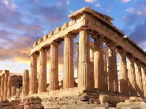
Acropole d'Athèneswiki-fr Stonehengewiki-fr
Stonehengewiki-fr Teotihuacanwiki-fr
Teotihuacanwiki-fr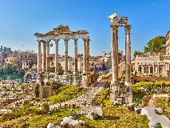
Forum romainwiki-fr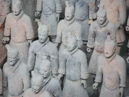
Armée de terre cuite de Xi'anwiki-fr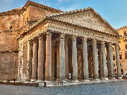
Panthéon de Romewiki-fr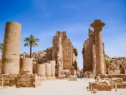
Temple de Karnakwiki-fr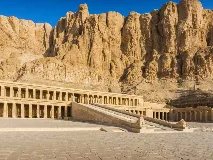
Vallée des Roiswiki-fr Abou Simbelwiki-fr
Abou Simbelwiki-fr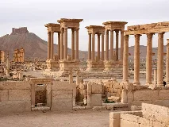
Ruines de Palmyrewiki-fr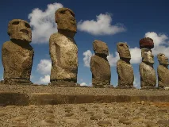
Moaïs de l'ile de Paqueswiki-fr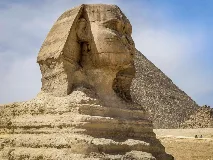
Sphinx de Gizehwiki-fr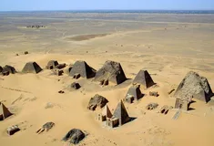
Pyramides de Méroéwiki-fr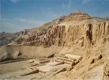
Deir el-Bahariwiki-en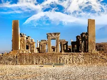
Persépolisbing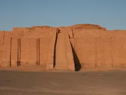
Ziggourat d'Ourwiki-fr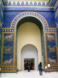
Porte d'Ishtarwiki-fr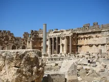
Baalbekwiki-fr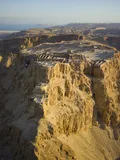
Masadawiki-fr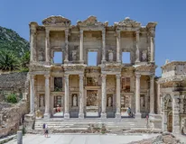
Éphèsewiki-fr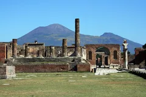
Pompéiwiki-fr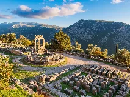
Delpheswiki-fr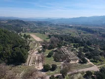
Olympiewiki-fr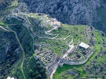
Mycèneswiki-fr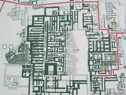
Cnossoswiki-fr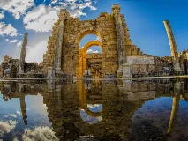
Leptis Magnawiki-fr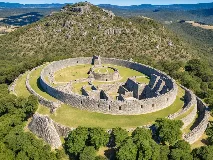
Grand Zimbabwewiki-fr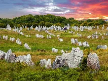
Alignements de Carnacwiki-fr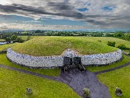
Newgrangewiki-en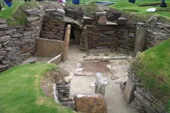
Skara Braewiki-fr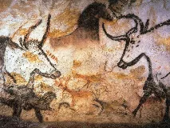
Lascauxwiki-fr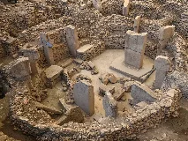
Göbekli Tepewiki-fr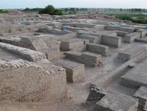
Mohenjo-darowiki-fr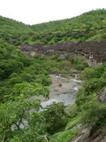
Grottes d'Ajantawiki-fr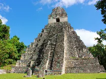
Tikalwiki-fr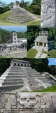
Palenquewiki-fr
Lignes de Nazcabing
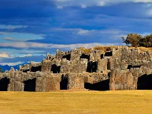
Sacsayhuamánwiki-fr